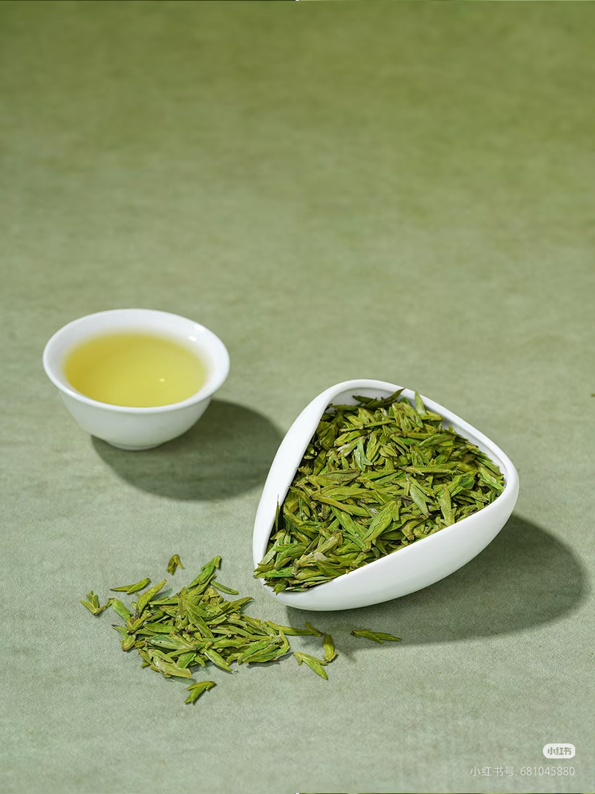
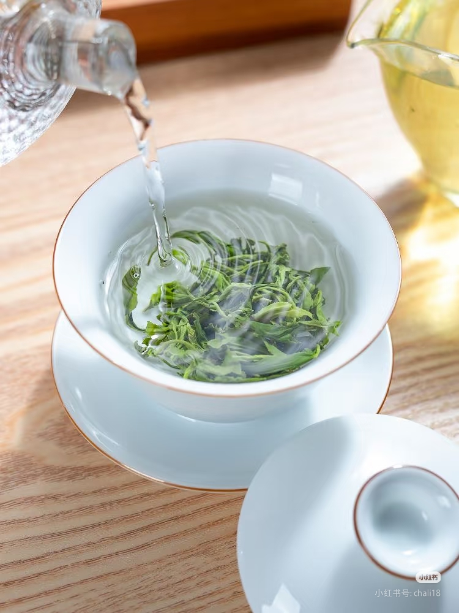
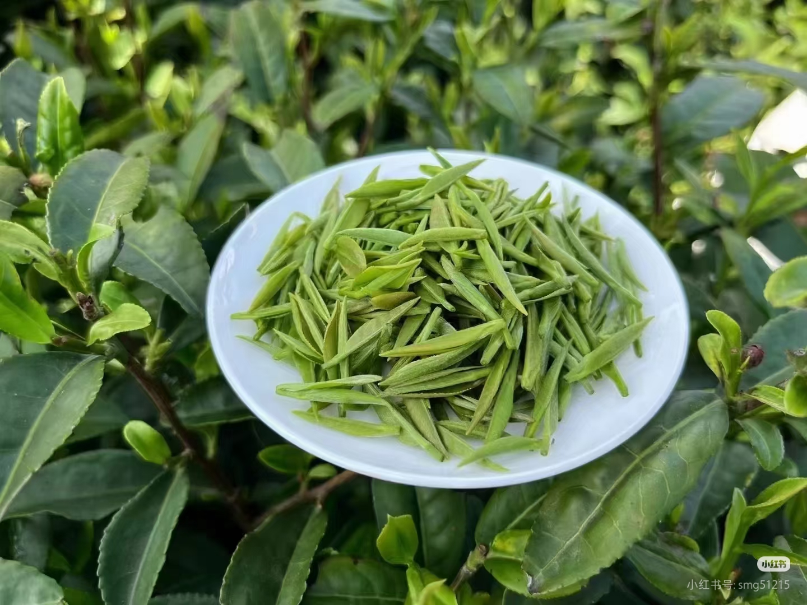
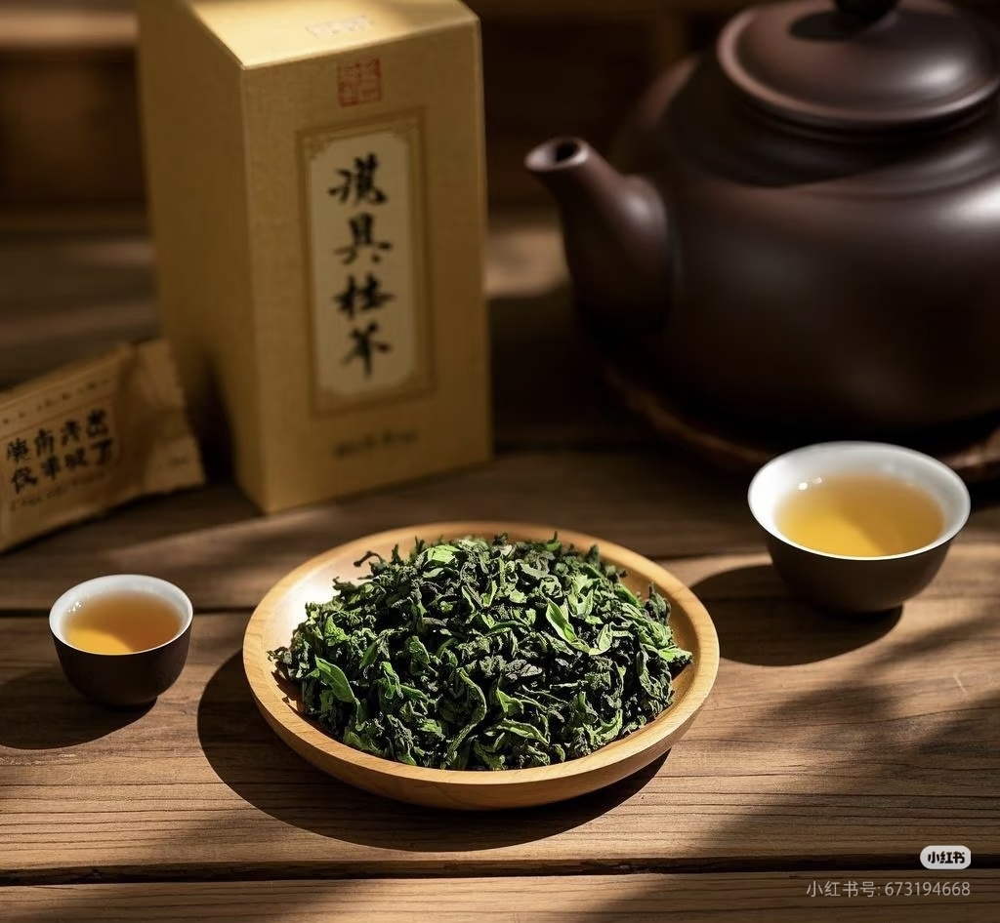
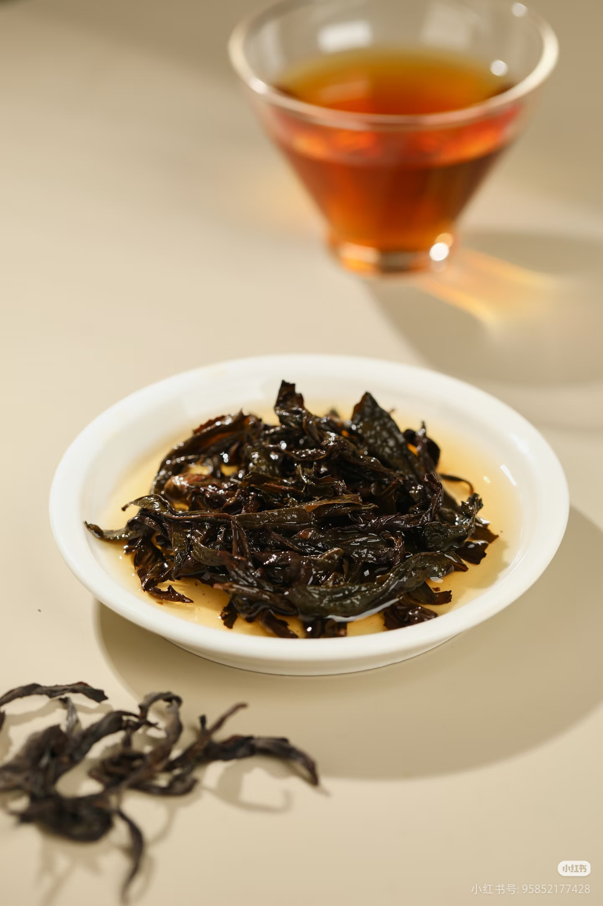
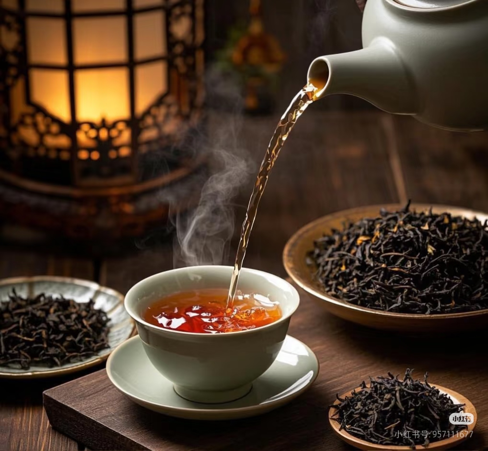
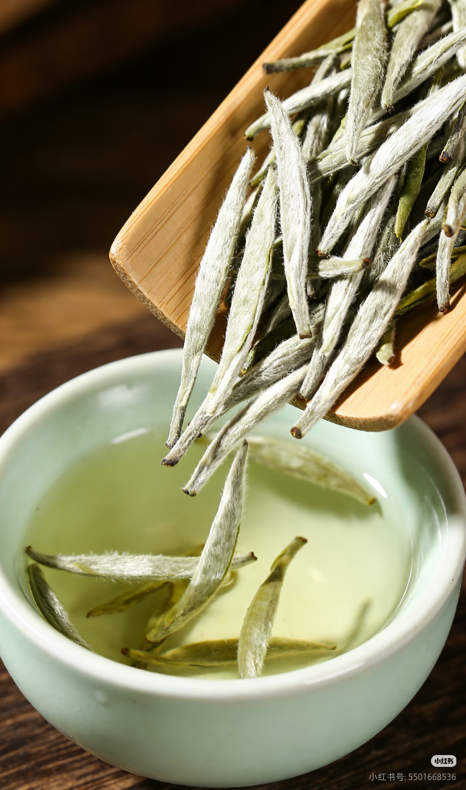
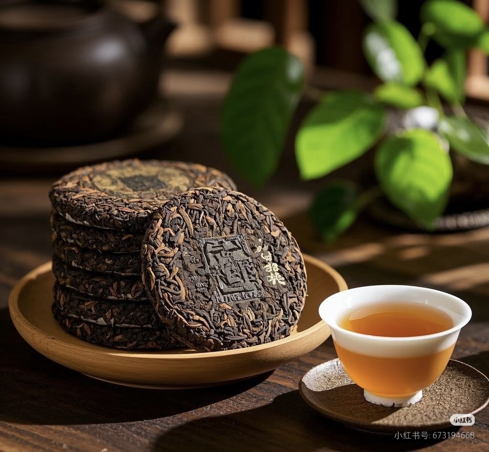
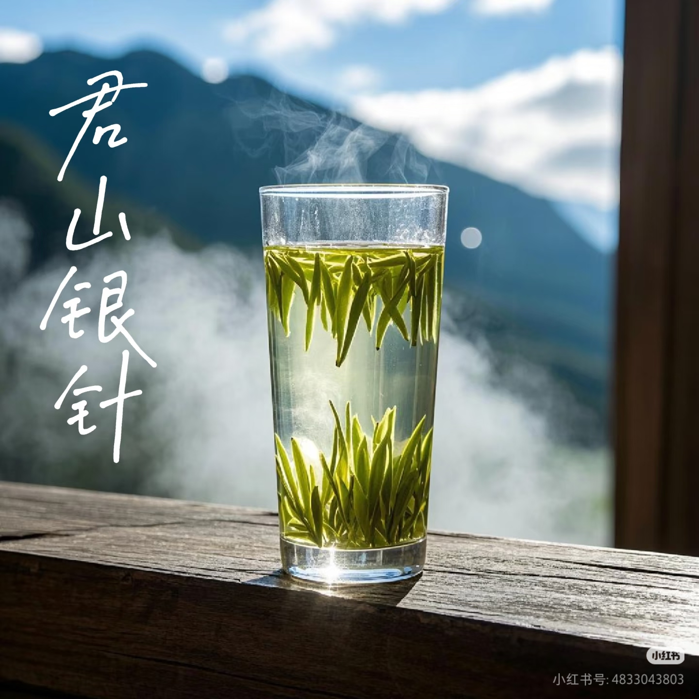
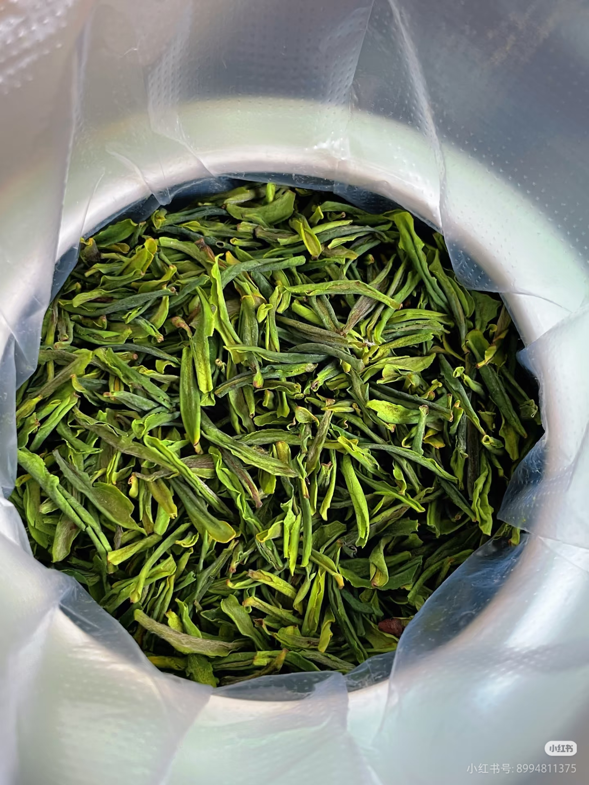

🏆 中国名茶榜
十大名茶，各有千秋
中国十大名茶是茶文化中的瑰宝，每一款都有独特的风味和故事。

绿茶
西湖龙井
产于浙江杭州西湖龙井村。色翠、香郁、味醇、形美，被誉为"绿茶皇后"。

绿茶
碧螺春
产于江苏苏州太湖洞庭山。条索紧结，白毫显露，卷曲成螺，花果香浓郁。

绿茶
信阳毛尖
产于河南信阳。细圆光直，白毫显露，汤色清澈，滋味鲜爽。

青茶
安溪铁观音
产于福建安溪。清香雅韵，冲泡后有天然的兰花香，回甘悠久。

青茶
武夷岩茶（大红袍）
产于福建武夷山。岩韵明显，香气馥郁，被誉为"茶中之王"。

红茶
祁门红茶
产于安徽祁门。香气似花似果似蜜，被称为"祁门香"，是红茶中的极品。

白茶
白毫银针
产于福建福鼎。满披白毫，如银似雪，汤色浅黄，滋味清鲜。

黑茶
普洱茶
产于云南普洱。陈香醇厚，越陈越香，有生普和熟普之分。

黄茶
君山银针
产于湖南岳阳君山。芽头肥壮，满披茸毛，汤色杏黄，滋味甘醇。

绿茶
六安瓜片
产于安徽六安。形似瓜子，色泽宝绿，汤色清澈，香气高长。